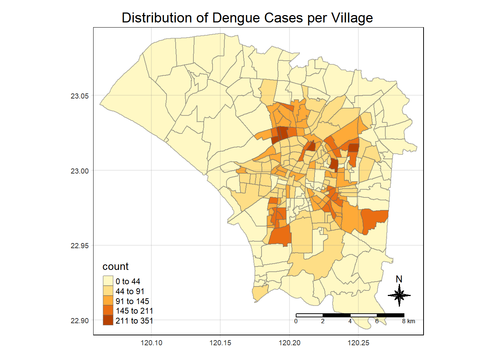
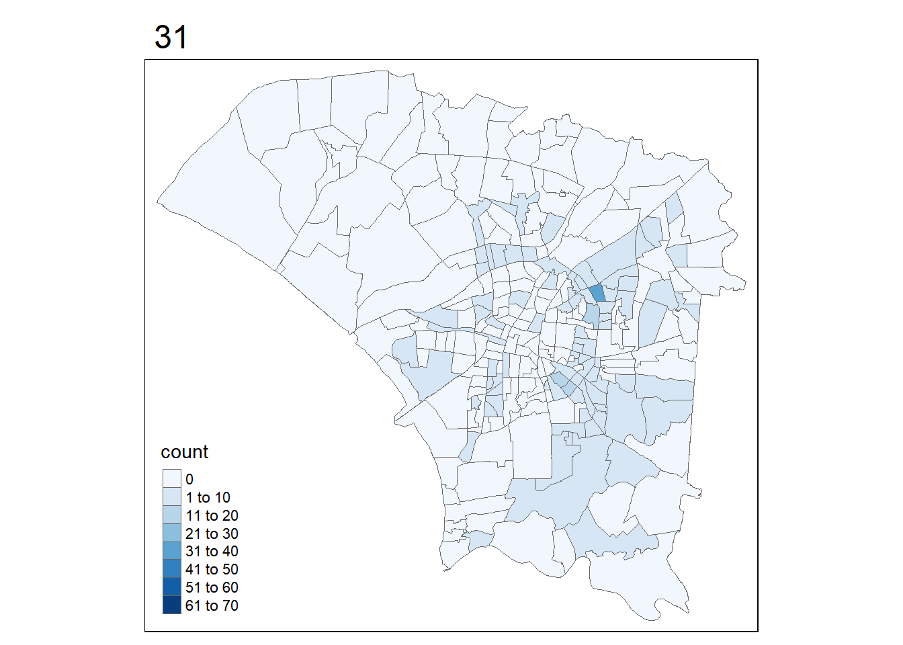

pacman::p_load(tidyverse, lubridate, dplyr, sf, tmap, sfdep)Take-home Exercise 2: Application of Spatial and Spatio-temporal Analysis Methods to Discover the Distribution of Dengue Fever in Tainan City, Taiwan
Overview
Dengue fever is a ubiquitous condition in tropical areas characterised by humid weather induced by warm temperatures and abundant rainfall. Taiwan is a subtropical region and its weather conditions cause it to be a favourable breeding ground for female Aedes aegypti and Aedes albopictus mosquitoes.
In 2015, Taiwan In 2015, Taiwan had recorded the most severe dengue fever outbreak with more than 43,000 dengue cases and 228 deaths. Since then, the annual reported dengue fever cases were maintained at the level of not more than 200 cases. However, in 2023, Taiwan recorded 26703 dengue fever cases (Kam, 2024).
Getting Started
Loading necessary packages
Importing data
Aspatial
dengue <- read_csv("data/aspatial/Dengue_Daily.csv")Geospatial
tn_sf <- st_read("data/geospatial/TAINAN_VILLAGE.shp")Reading layer `TAINAN_VILLAGE' from data source
`C:\guacodemoleh\IS415-GAA\Take-home_Ex\Take-home_Ex02\data\geospatial\TAINAN_VILLAGE.shp'
using driver `ESRI Shapefile'
Simple feature collection with 649 features and 10 fields
Geometry type: POLYGON
Dimension: XY
Bounding box: xmin: 120.0269 ymin: 22.88751 xmax: 120.6563 ymax: 23.41374
Geodetic CRS: TWD97The coordinates are employing the TWD97 geodetic system.
Aspatial Data Preparation
For a quick glace of the dengue data set, we can use head().
head(dengue)# A tibble: 6 × 26
發病日 個案研判日 通報日 性別 年齡層 居住縣市 居住鄉鎮 居住村里
<date> <chr> <date> <chr> <chr> <chr> <chr> <chr>
1 1998-01-02 None 1998-01-07 男 40-44 屏東縣 屏東市 None
2 1998-01-03 None 1998-01-14 男 30-34 屏東縣 東港鎮 None
3 1998-01-13 None 1998-02-18 男 55-59 宜蘭縣 宜蘭市 None
4 1998-01-15 None 1998-01-23 男 35-39 高雄市 苓雅區 None
5 1998-01-20 None 1998-02-04 男 55-59 宜蘭縣 五結鄉 None
6 1998-01-22 None 1998-02-19 男 20-24 桃園市 蘆竹區 None
# ℹ 18 more variables: 最小統計區 <chr>, 最小統計區中心點X <chr>,
# 最小統計區中心點Y <chr>, 一級統計區 <chr>, 二級統計區 <chr>,
# 感染縣市 <chr>, 感染鄉鎮 <chr>, 感染村里 <chr>, 是否境外移入 <chr>,
# 感染國家 <chr>, 確定病例數 <dbl>, 居住村里代碼 <chr>, 感染村里代碼 <chr>,
# 血清型 <chr>, 內政部居住縣市代碼 <chr>, 內政部居住鄉鎮代碼 <chr>,
# 內政部感染縣市代碼 <chr>, 內政部感染鄉鎮代碼 <chr>Since all the column names are in Traditional Chinese, have a closer look at them.
First, use colnames() to list all the attribute titles.
colnames(dengue) [1] "發病日" "個案研判日" "通報日"
[4] "性別" "年齡層" "居住縣市"
[7] "居住鄉鎮" "居住村里" "最小統計區"
[10] "最小統計區中心點X" "最小統計區中心點Y" "一級統計區"
[13] "二級統計區" "感染縣市" "感染鄉鎮"
[16] "感染村里" "是否境外移入" "感染國家"
[19] "確定病例數" "居住村里代碼" "感染村里代碼"
[22] "血清型" "內政部居住縣市代碼" "內政部居住鄉鎮代碼"
[25] "內政部感染縣市代碼" "內政部感染鄉鎮代碼"Glossary
For our convenience, here is the table of translations for all the attributes:
| Attribute | Translation |
|---|---|
|
Onset date |
|
Assessed date |
|
Notification date |
|
Gender |
|
Age group |
|
Residential city |
|
Residential township |
|
Residential village |
|
Smallest statistical area |
|
X-coordinate of the smallest statistical area |
|
Y-coordinate of the smallest statistical area |
|
Level 1 statistical area |
|
Level 2 statistical area |
|
Infected city |
|
Infected township |
|
Infected village |
|
Imported case? |
|
Imported country origin |
|
Confirmed case count |
|
Residential village code |
|
Infected village code |
|
Serotype |
|
Residential city (Internal Affairs) |
|
Residential township (Internal Affairs) |
|
Infected city code (Internal Affairs) |
|
Infected township code (Internal Affairs) |
The above might not be translated accurately but it should suffice for this project.
Focus
Study area
Since the data includes recorded cases across Taiwan, it needs to be narrowed to Tainan first.
Filter for Tainan City (台南市).
tainan_dengue <- dengue %>%
filter(居住縣市=="台南市")
nrow(tainan_dengue)[1] 48355nrow(dengue)[1] 106861Study period
The dengue fever cases are to be confined to epidemiology weeks 31 to 50 in 2023.
First, extract all the year 2023 cases. The subset() function can be used, where the first four characters of the string value in the onset date, “發病日”, represent the year.
tainan_dengue_2023 <- subset(tainan_dengue, substr(發病日, 1, 4) == "2023")
nrow(tainan_dengue_2023)[1] 21543Next, create a column to store the epidemiology week number for the respective dates. We can use a function called epiweek() from the lubridate package to carry this task out.
tainan_dengue_2023$epi_week <- epiweek(tainan_dengue_2023$發病日)Filter for epidemiology weeks 31 to 50.
tainan_dengue_2023 <- tainan_dengue_2023 %>%
filter(epi_week >= 31 & epi_week <= 50)
nrow(tainan_dengue_2023)[1] 20756According to (Health Protection Surveillance Centre)[https://www.hpsc.ie/notifiablediseases/resources/epidemiologicalweeks/], epidemiology weeks 31 to 50 are from 2023-07-30 to 2023-12-16.
Check that the earliest and latest date in tainan_dengue_2023 are 2023-07-30 and 2023-12-16 respectively.
earliest_date <- min(tainan_dengue_2023$發病日)
latest_date <- max(tainan_dengue_2023$發病日)
earliest_date == "2023-07-30"[1] TRUElatest_date == "2023-12-16"[1] TRUE
Important
Since it is my first time using the epiweek() function, I felt it was important to refer to an official medical source explicitly stating the start and end dates of our interested study period. Hence, I performed a quick test to check if there was any mistake in the usage of this unfamiliar function.
Distribution of Cases over Time
Plot a histogram to observe the number of dengue fever cases over time for the entire Tainan City.
Using the ggplot2 package,
ggplot(tainan_dengue_2023, aes(x = epi_week, y = 確定病例數)) +
geom_bar(stat = "identity", fill = "blue") +
labs(x = "Epidemiology Week", y = "Count", title = "Distribution of Cases over Time (2023)") +
theme_minimal()
Alternatively, using hist(),
epi_week_numeric <- as.numeric(as.character(tainan_dengue_2023$epi_week))
hist(epi_week_numeric, xlab = "Epidemiology Week", ylab = "Frequency", main = "Distribution of Cases over Time (2023)", col = "blue")
Personally, using ggplot() is easier since the gridlines are generated.
Visually, the dengue cases seem to be normally distributed across the 20 weeks of the study period.
Geospatial Data Preparation
Check if there are any missing values.
dengue_long_na <- any(is.na(tainan_dengue_2023$最小統計區中心點X))
dengue_long_na[1] FALSEdengue_lat_na <- any(is.na(tainan_dengue_2023$最小統計區中心點Y))
dengue_lat_na[1] FALSETainan Administrative Boundary Layer
Let’s have a look at the Tainan boundary.
plot(st_geometry(tn_sf))
head(tn_sf)Simple feature collection with 6 features and 10 fields
Geometry type: POLYGON
Dimension: XY
Bounding box: xmin: 120.053 ymin: 22.93251 xmax: 120.2905 ymax: 23.16919
Geodetic CRS: TWD97
VILLCODE COUNTYNAME TOWNNAME VILLNAME VILLENG COUNTYID COUNTYCODE
1 67000280002 臺南市 歸仁區 六甲里 Liujia Vil. D 67000
2 67000350032 臺南市 安南區 青草里 Qingcao Vil. D 67000
3 67000150009 臺南市 七股區 溪南里 Xinan Vil. D 67000
4 67000150010 臺南市 七股區 七股里 Qigu Vil. D 67000
5 67000150008 臺南市 七股區 龍山里 Longshan Vil. D 67000
6 67000150017 臺南市 七股區 中寮里 Zhongliao Vil. D 67000
TOWNID TOWNCODE NOTE geometry
1 D33 67000280 <NA> POLYGON ((120.2725 22.95868...
2 D06 67000350 <NA> POLYGON ((120.1176 23.08387...
3 D22 67000150 <NA> POLYGON ((120.121 23.1355, ...
4 D22 67000150 <NA> POLYGON ((120.1312 23.1371,...
5 D22 67000150 <NA> POLYGON ((120.0845 23.13503...
6 D22 67000150 <NA> POLYGON ((120.126 23.16917,...Rename TOWNNAME and VILLNAME to 居住鄉鎮 and 居住村里 respectively.
tn_sf$居住鄉鎮 <- tn_sf$TOWNNAME
tn_sf$居住村里 <- tn_sf$VILLNAME
Why create new columns in Traditional Chinese?
My rationale is that since most of the data columns in tainan_dengue_2023 are already written in Traditional Chinese, it is easier to perform a left join later with tn_sf.
Spatial Consolidated Dengue Fever Data Set
Common Unique Identifier for Geospatial & Aspatial Data
Check the number of unique village codes VILLCODE and test if the attribute is a unique identifier for tn_sf.
n_rows <- nrow(tn_sf)
n_villcode <- tn_sf %>%
distinct(VILLCODE) %>%
n_distinct()
n_rows == n_villcode[1] TRUEThe village code attribute VILLCODE can be the unique identifier for tn_sf.
Common Unique Identifier
However, the common unique identifier between tn_sf and tainan_dengue_2023 cannot be VILLCODE as the former does not have such an attribute.
There are multiple village codes that hold the same town name (居住鄉鎮) and/or village name (居住村里).
unique_townname <- tn_sf %>%
distinct(居住鄉鎮) %>%
nrow()
unique_villname <- tn_sf %>%
distinct(居住村里) %>%
nrow()
n_rows > unique_townname[1] TRUEn_rows > unique_villname[1] TRUEI suspect that the common unique identifiers between the two data are the town name (居住鄉鎮) and the village name (居住村里). Hence, the total number of this hypothesised pair of unique identified should be equal to the total number of rows in tn_sf.
unique_pair <- tn_sf %>%
distinct(居住鄉鎮, 居住村里) %>%
nrow()
unique_pair == n_rows[1] TRUESince the evaluation turns out to be true, the town name and village name are indeed unique identifiers.
To perform exploratory data analysis using choropleth maps later, the dengue fever cases should be first organised according to their common unique identifiers.
tainan_dengue_consolidated <- tainan_dengue_2023 %>%
group_by(居住鄉鎮, 居住村里) %>%
summarise(count=n())
head(tainan_dengue_consolidated)# A tibble: 6 × 3
# Groups: 居住鄉鎮 [1]
居住鄉鎮 居住村里 count
<chr> <chr> <int>
1 七股區 三股里 1
2 七股區 十份里 2
3 七股區 大埕里 4
4 七股區 大潭里 2
5 七股區 樹林里 5
6 七股區 永吉里 1Combine the consolidated attributes to the geospatial tn_sf layer.
tainan_spatial <- left_join(tn_sf,tainan_dengue_consolidated)
any(is.na(tainan_spatial$count))[1] TRUEReplace the NA count values with zero to prevent errors later.
tainan_spatial <- tainan_spatial %>%
mutate(count = ifelse(is.na(count), 0, count))
any(is.na(tainan_spatial$count))[1] FALSEExploratory Data Analysis
Visualising Choropleth Map
Areas of Interest
We are only interested in TOWNIDs D01, D02, D04, D06, D07, D08, D32 and D39.
Filter for these AOIs.
tainan_aoi <- tainan_spatial %>%
filter(TOWNID %in% c("D01", "D02", "D04", "D06", "D07", "D08", "D32", "D39"))
sum(tainan_aoi$count)[1] 16473tainan_D01 <- tainan_aoi %>%
filter(TOWNID == "D01")
tainan_D02 <- tainan_aoi %>%
filter(TOWNID == "D02")
tainan_D04 <- tainan_aoi %>%
filter(TOWNID == "D04")
tainan_D06 <- tainan_aoi %>%
filter(TOWNID == "D06")
tainan_D07 <- tainan_aoi %>%
filter(TOWNID == "D07")
tainan_D08 <- tainan_aoi %>%
filter(TOWNID == "D08")
tainan_D32 <- tainan_aoi %>%
filter(TOWNID == "D32")
tainan_D39 <- tainan_aoi %>%
filter(TOWNID == "D39")To have a quick view of the distribution of dengue fever cases, qtm() from the tmap package can be used.
Let’s have an overview of the interested towns.
tm_shape(tainan_aoi) +
tm_polygons("count") +
tm_fill("count",
n=5,
title="count",
style="equal",
palette="YlOrRd") +
tm_borders(lwd=0.2,
alpha=1) +
tm_layout(main.title = "Dengue Fever Cases Distribution in AOI", legend.outside=FALSE, main.title.size=1) +
tm_scale_bar()
I have an initial assumption that the distribution of the dengue fever onset is spatially random.
ggplot(tainan_aoi, aes(x = TOWNID, y = count)) +
geom_bar(stat = "identity", fill = "blue") +
geom_text(aes(label = count), vjust = -0.5, color = "black", size = 3) +
labs(x = "TOWNID", y = "Count", title = "Distribution of Cases over Areas of Interest (2023)") +
theme_minimal()
The top three districts in terms of the number of dengue fever cases are, in ascending order, D01, D06 followed by D39.
Colour-code interested towns for familiarity.
townid_map <-tm_shape(tainan_aoi) +
tm_polygons("TOWNID", title = "TOWNID") +
tm_layout(title = "Distinct Towns within AOI")
townname_map <- tm_shape(tainan_aoi) + tm_polygons("TOWNNAME", title = "TOWNNAME") +
tm_layout(title = "Distinct Towns within AOI")
tmap_arrange(townid_map, townname_map, asp=1, ncol=2)
In summary,
D01:東區 (East District)
D02:南區 (South District)
D04:北區 (North District)
D06:安南區 (An’nan District)
D07:安平區 (An’ping District)
D08:中西區 (West Central District)
D32:仁德區 (Ren’de District)
D39:永康區 (Yong’kang District)
District Level Observations
basemap_D01 <- tm_shape(tainan_D01) +
tm_polygons() +
tm_text("VILLENG", size=0.5) +
tm_layout(main.title = "East District", legend.outside=FALSE, main.title.size=1)
view_tainan_D01 <-
tm_shape(tainan_D01) +
tm_fill("count",
n=5,
title = "count",
style = "jenks") +
tm_borders(lwd=0.2,
alpha=1) +
tm_layout(main.title = "Dengue Cases Distribution in East District", legend.outside=FALSE, main.title.size=1) +
tm_scale_bar()
tmap_arrange(basemap_D01, view_tainan_D01, asp=1, ncol=2) 
basemap_D02 <- tm_shape(tainan_D02) +
tm_polygons() +
tm_text("VILLENG", size=0.5) +
tm_layout(main.title = "South District", legend.outside=FALSE, main.title.size=1)
view_tainan_D02 <-
tm_shape(tainan_D02) +
tm_fill("count",
n=5,
title = "count",
style = "jenks") +
tm_borders(lwd=0.2,
alpha=1) +
tm_layout(main.title = "Dengue Cases Distribution in South District", legend.outside=FALSE, main.title.size=1) +
tm_scale_bar()
tmap_arrange(basemap_D02, view_tainan_D02, asp=1, ncol=2) basemap_D04 <- tm_shape(tainan_D04) +
tm_polygons() +
tm_text("VILLENG", size=0.5) +
tm_layout(main.title = "North District", legend.outside=FALSE, main.title.size=1)
view_tainan_D04 <-
tm_shape(tainan_D04) +
tm_fill("count",
n=5,
title = "count",
style = "jenks") +
tm_borders(lwd=0.2,
alpha=1) +
tm_layout(main.title = "Dengue Cases Distribution in North District", legend.outside=FALSE, main.title.size=1) +
tm_scale_bar()
tmap_arrange(basemap_D04, view_tainan_D04, asp=1, ncol=2) 
basemap_D06 <- tm_shape(tainan_D06) +
tm_polygons() +
tm_text("VILLENG", size=0.5) +
tm_layout(main.title = "An'nan District", legend.outside=FALSE, main.title.size=1)
view_tainan_D06 <-
tm_shape(tainan_D06) +
tm_fill("count",
n=5,
title = "count",
style = "jenks") +
tm_borders(lwd=0.2,
alpha=1) +
tm_layout(main.title = "Dengue Cases Distribution in An'nan District", legend.outside=FALSE, main.title.size=1) +
tm_scale_bar()
tmap_arrange(basemap_D06, view_tainan_D06, asp=1, ncol=2) basemap_D07 <- tm_shape(tainan_D07) +
tm_polygons() +
tm_text("VILLENG", size=0.5) +
tm_layout(main.title = "An'ping District", legend.outside=FALSE, main.title.size=1)
view_tainan_D07 <-
tm_shape(tainan_D07) +
tm_fill("count",
n=5,
title = "count",
style = "jenks") +
tm_borders(lwd=0.2,
alpha=1) +
tm_layout(main.title = "Dengue Cases Distribution in An'ping District",legend.outside=FALSE, main.title.size=1) +
tm_scale_bar()
tmap_arrange(basemap_D07, view_tainan_D07, asp=1, ncol=2) 
basemap_D08 <- tm_shape(tainan_D08) +
tm_polygons() +
tm_text("VILLENG", size=0.5) +
tm_layout(main.title = "West Central District", legend.outside=FALSE, main.title.size=1)
view_tainan_D08 <-
tm_shape(tainan_D08) +
tm_fill("count",
n=5,
title = "count",
style = "jenks") +
tm_borders(lwd=0.2,
alpha=1) +
tm_layout(main.title = "Dengue Cases Distribution in West Central District", legend.outside=FALSE, main.title.size=1) +
tm_scale_bar()
tmap_arrange(basemap_D08, view_tainan_D08, asp=1, ncol=2) 
basemap_D32 <- tm_shape(tainan_D32) +
tm_polygons() +
tm_text("VILLENG", size=0.5) +
tm_layout(main.title = "Ren'de District", legend.outside=FALSE, main.title.size=1)
view_tainan_D32 <-
tm_shape(tainan_D32) +
tm_fill("count",
n=5,
title = "count",
style = "jenks") +
tm_borders(lwd=0.2,
alpha=1) +
tm_layout(main.title = "Dengue Cases Distribution in Ren'de District",legend.outside=FALSE, main.title.size=1) +
tm_scale_bar()
tmap_arrange(basemap_D32, view_tainan_D32, asp=1, ncol=2) 
basemap_D39 <- tm_shape(tainan_D39) +
tm_polygons() +
tm_text("VILLENG", size=0.5) +
tm_layout(main.title = "Yong'kang District", legend.outside=FALSE, main.title.size=1)
view_tainan_D39 <-
tm_shape(tainan_D39) +
tm_fill("count",
n=5,
title = "count",
style = "jenks") +
tm_borders(lwd=0.2,
alpha=1) +
tm_layout(main.title = "Dengue Cases Distribution in Yong'kang District", legend.outside=FALSE, main.title.size=1) +
tm_scale_bar()
tmap_arrange(basemap_D39, view_tainan_D39, asp=1, ncol=2)